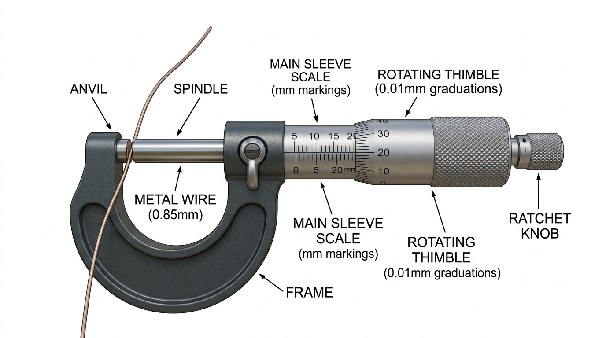
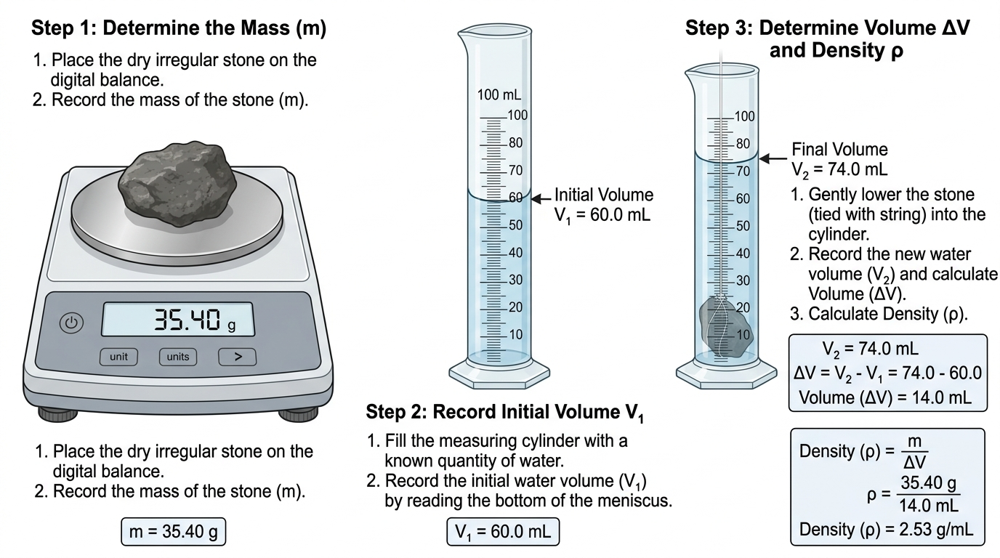
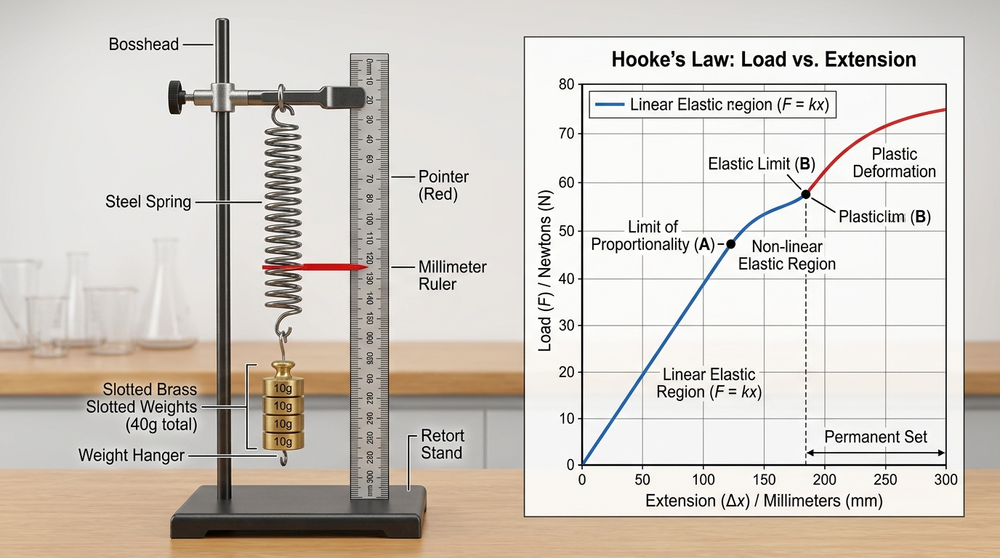
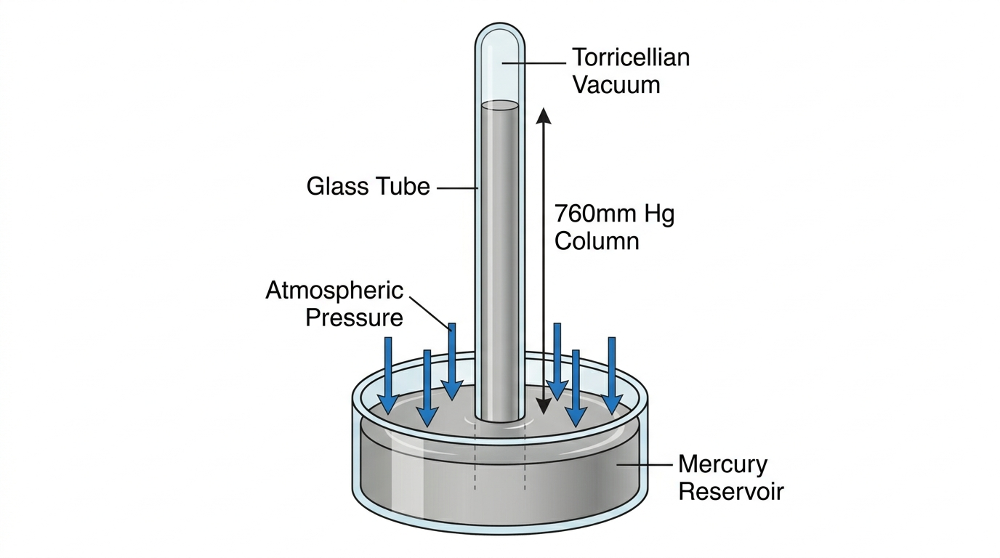
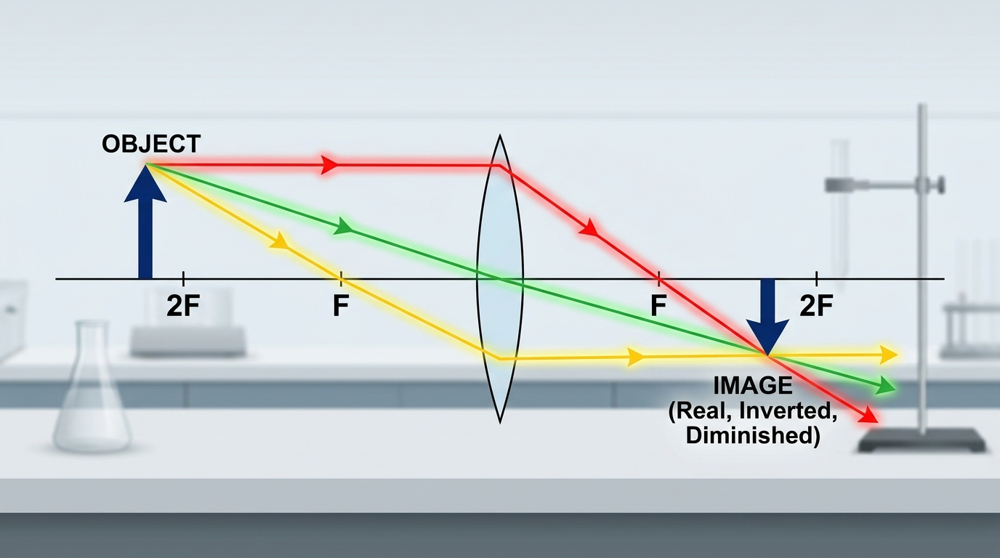
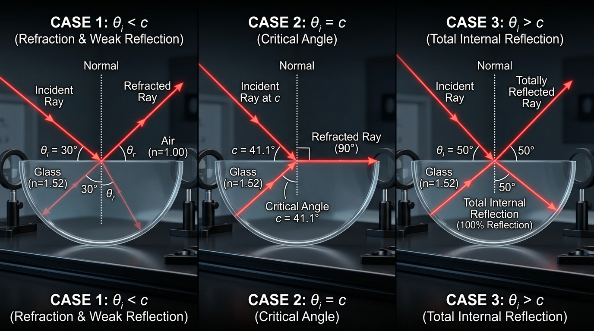
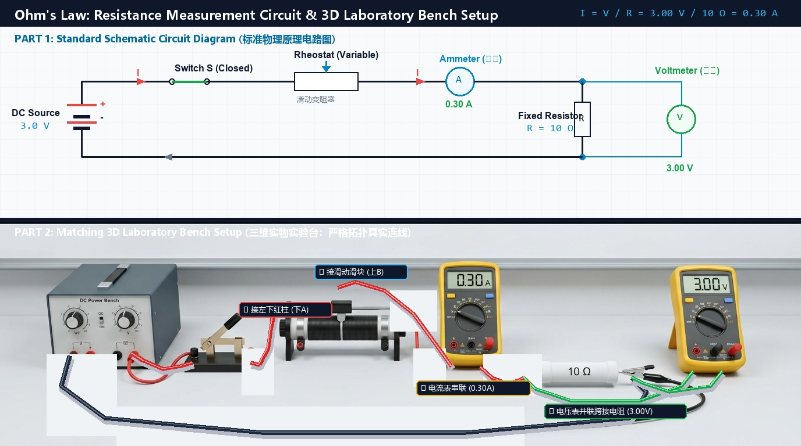
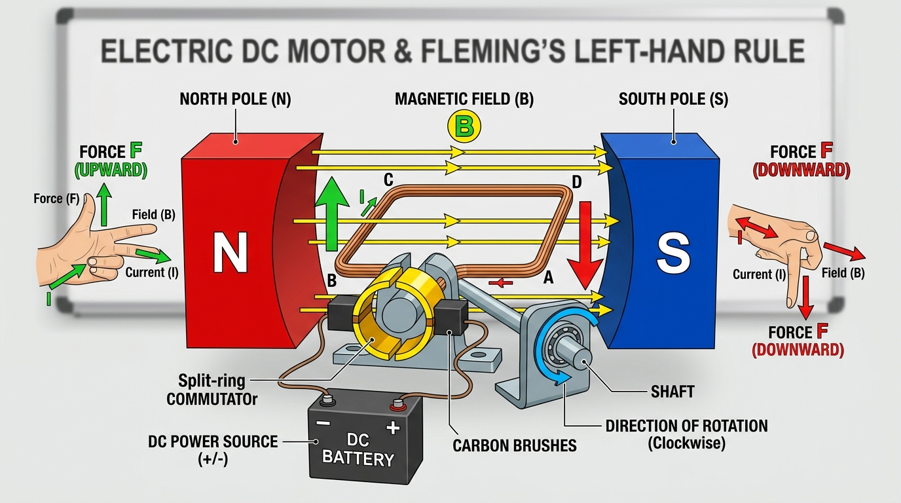
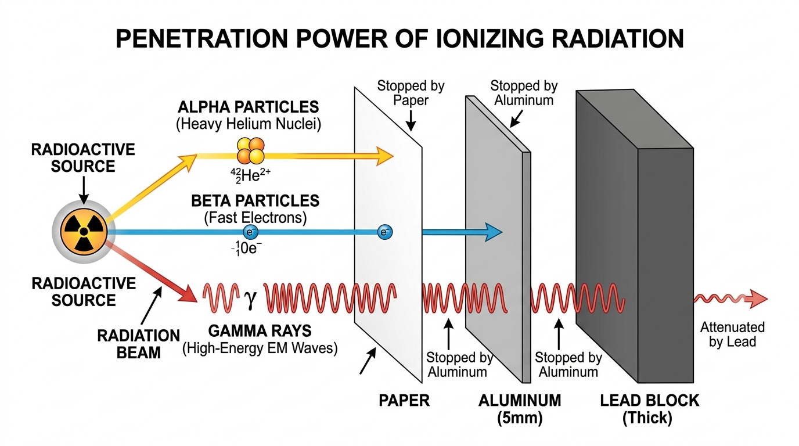
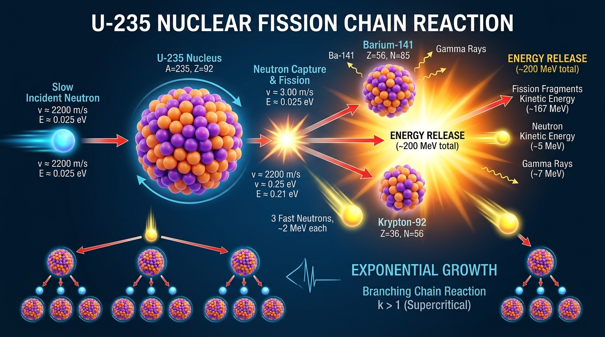

| Word / Term | Phonetic | Chinese Definition | Context & Note | Speak |
|---|---|---|---|---|
| density | /ˈdensəti/ |
n. 密度 | Density is calculated by dividing mass by volume. | |
| parallax | /ˈpærəlæks/ |
n. 视差误差 | Reading at an angle causes parallax error. | |
| micrometer | /maɪˈkrɒmɪtə(r)/ |
n. 螺旋测微器 | Use a micrometer to measure the wire diameter. | |
| meniscus | /məˈnɪskəs/ |
n. 凹液面 | Read the cylinder at the lowest point of the meniscus. | |
| displacement | /dɪsˈpleɪsmənt/ |
n. 排水量/位移 | The displacement method determines volume. |
| Word / Term | Phonetic | Chinese Definition | Context & Note | Speak |
|---|---|---|---|---|
| pressure | /ˈpreʃə(r)/ |
n. 压强 | Pressure equals force divided by area. | |
| extension | /ɪkˈstenʃn/ |
n. 伸长量 | Extension is directly proportional to applied force. |
| Word / Term | Phonetic | Chinese Definition | Context & Note | Speak |
|---|---|---|---|---|
| pressure | /ˈpreʃə(r)/ |
n. 压强 | Pressure equals force divided by area. | |
| extension | /ɪkˈstenʃn/ |
n. 伸长量 | Extension is directly proportional to applied force. |
| Word / Term | Phonetic | Chinese Definition | Context & Note | Speak |
|---|---|---|---|---|
| pressure | /ˈpreʃə(r)/ |
n. 压强 | Pressure equals force divided by area. | |
| extension | /ɪkˈstenʃn/ |
n. 伸长量 | Extension is directly proportional to applied force. |
| Word / Term | Phonetic | Chinese Definition | Context & Note | Speak |
|---|---|---|---|---|
| pressure | /ˈpreʃə(r)/ |
n. 压强 | Pressure equals force divided by area. | |
| extension | /ɪkˈstenʃn/ |
n. 伸长量 | Extension is directly proportional to applied force. |
| Word / Term | Phonetic | Chinese Definition | Context & Note | Speak |
|---|---|---|---|---|
| kinetic | /kɪˈnetɪk/ |
adj. 动能的 | A moving lorry has massive kinetic energy. | |
| potential | /pəˈtenʃl/ |
n./adj. 势能 | Water behind a dam stores gravitational potential energy. | |
| conservation | /ˌkɒnsəˈveɪʃn/ |
n. 守恒 | The conservation of energy is a fundamental law of physics. | |
| efficiency | /ɪˈfɪʃnsi/ |
n. 效率 | LED lamps have much higher energy efficiency than filament bulbs. | |
| dissipated | /ˈdɪsɪpeɪtɪd/ |
adj. 散失的/耗散的 | Wasted energy is dissipated into the environment as heat. |
| Word / Term | Phonetic | Chinese Definition | Context & Note | Speak |
|---|---|---|---|---|
| renewable | /rɪˈnjuːəbl/ |
adj. 可再生的 | Wind and solar are renewable energy resources. | |
| geothermal | /ˌdʒiːəʊˈθɜːml/ |
adj. 地热的 | Iceland generates electricity from geothermal heat. | |
| biomass | /ˈbaɪəʊmæs/ |
n. 生物质能 | Biomass includes organic waste and wood pellets. | |
| hydroelectric | /ˌhaɪdrəʊɪˈlektrɪk/ |
adj. 水力发电的 | Hydroelectric power uses water trapped behind a dam. | |
| fossil | /ˈfɒsl/ |
adj./n. 化石的/化石燃料 | Fossil fuels are non-renewable and release greenhouse gases. |
| Word / Term | Phonetic | Chinese Definition | Context & Note | Speak |
|---|---|---|---|---|
| joule | /dʒuːl/ |
n. 焦耳 (J) | One joule of work is done when one newton moves an object by one meter. | |
| watt | /wɒt/ |
n. 瓦特 (W) | A 100-watt bulb transfers 100 joules of electrical energy per second. | |
| power | /ˈpaʊə(r)/ |
n. 功率 | Electric cranes have high power to lift steel beams quickly. | |
| displacement | /dɪsˈpleɪsmənt/ |
n. 位移 | Work requires movement along the line of action. | |
| rate | /reɪt/ |
n. 比率/速率 | Power is the rate of energy transfer. |
| Word / Term | Phonetic | Chinese Definition | Context & Note | Speak |
|---|---|---|---|---|
| brownian | /ˈbraʊniən/ |
adj. 布朗运动的 | Smoke cells provide visible evidence of Brownian motion. | |
| lattice | /ˈlætɪs/ |
n. 晶格/点阵 | Particles in a crystalline solid form a regular lattice. | |
| collision | /kəˈlɪʒn/ |
n. 碰撞 | Gas pressure is generated by molecular collisions on the wall. | |
| inversely | /ˌɪnˈvɜːsli/ |
adv. 成反比地 | Pressure is inversely proportional to volume at constant temperature. | |
| random | /ˈrændəm/ |
adj. 随机的/无规则的 | Gas molecules undergo continuous random motion. |
| Word / Term | Phonetic | Chinese Definition | Context & Note | Speak |
|---|---|---|---|---|
| capacity | /kəˈpæsəti/ |
n. 热容/容量 | Water has a very high specific heat capacity. | |
| latent | /ˈleɪtnt/ |
adj. 潜热的 | Latent heat of fusion is absorbed during melting. | |
| evaporation | /ɪˌvæpəˈreɪʃn/ |
n. 蒸发 | Sweat causes cooling through the evaporation of water. | |
| boiling | /ˈbɔɪlɪŋ/ |
n. 沸腾 | Boiling occurs throughout the liquid at a fixed temperature. | |
| bimetallic | /ˌbaɪmɪˈtælɪk/ |
adj. 双金属的 | A bimetallic strip bends when heated. |
| Word / Term | Phonetic | Chinese Definition | Context & Note | Speak |
|---|---|---|---|---|
| conduction | /kənˈdʌkʃn/ |
n. 热传导 | Metals are excellent conductors of heat due to free electrons. | |
| convection | /kənˈvekʃn/ |
n. 热对流 | Hot air rises due to convection currents. | |
| radiation | /ˌreɪdiˈeɪʃn/ |
n. 热辐射 | Infrared radiation travels across space from the Sun. | |
| insulator | /ˈɪnsjəleɪtə(r)/ |
n. 绝热体/隔热材料 | Fiberglass trapped in walls acts as a thermal insulator. | |
| emitter | /ɪˈmɪtə(r)/ |
n. 辐射体/发射体 | Black objects are effective emitters of infrared heat. |
| Word / Term | Phonetic | Chinese Definition | Context & Note | Speak |
|---|---|---|---|---|
| compression | /kəmˈpreʃn/ |
n. 密部 (高压区) | Particles are closest together in a compression. | |
| rarefaction | /ˌreərɪˈfækʃn/ |
n. 疏部 (低压区) | A rarefaction is an area of low molecular density. | |
| ultrasound | /ˈʌltrəsaʊnd/ |
n. 超声波 | Ultrasound scans can image an unborn fetus safely. | |
| amplitude | /ˈæmplɪtjuːd/ |
n. 振幅 | Increasing amplitude makes the sound louder. | |
| frequency | /ˈfriːkwənsi/ |
n. 频率 | Frequency determines the musical pitch. |
| Word / Term | Phonetic | Chinese Definition | Context & Note | Speak |
|---|---|---|---|---|
| reflection | /rɪˈflekʃn/ |
n. 反射 | The mirror provides specular reflection. | |
| refraction | /rɪˈfrækʃn/ |
n. 折射 | Light undergoes refraction at the water boundary. | |
| critical | /ˈkrɪtɪkl/ |
adj. 临界的 | Total internal reflection happens above the critical angle. | |
| converging | /kənˈvɜːdʒɪŋ/ |
adj. 会聚的 | A convex lens is a converging lens. | |
| virtual | /ˈvɜːtʃuəl/ |
adj. 虚像的 | A plane mirror creates a virtual image. |
| Word / Term | Phonetic | Chinese Definition | Context & Note | Speak |
|---|---|---|---|---|
| transverse | /ˈtrænzvɜːs/ |
adj. 横向的/横波的 | Light waves are transverse electromagnetic waves. | |
| diffraction | /dɪˈfrækʃn/ |
n. 衍射 | Diffraction spreads sound around doorways easily. | |
| wavelength | /ˈweɪvleŋθ/ |
n. 波长 | Wavelength is the distance between consecutive crests. | |
| wavefront | /ˈweɪvfrʌnt/ |
n. 波前/波阵面 | Wavefronts are lines joining adjacent points of the same phase. |
| Word / Term | Phonetic | Chinese Definition | Context & Note | Speak |
|---|---|---|---|---|
| radiation | /ˌreɪdiˈeɪʃn/ |
n. 辐射 | Gamma rays are high-energy ionizing radiation. | |
| ionizing | /ˈaɪənaɪzɪŋ/ |
adj. 电离的 | Ionizing radiation can knock electrons off atoms. | |
| microwave | /ˈmaɪkrəweɪv/ |
n. 微波 | Microwaves penetrate air to reach satellites. | |
| ultraviolet | /ˌʌltrəˈvaɪələt/ |
adj./n. 紫外线 | UV light stimulates melanin production in the skin. |
| Word / Term | Phonetic | Chinese Definition | Context & Note | Speak |
|---|---|---|---|---|
| electromagnet | /ɪˌlektrəʊˈmæɡnət/ |
n. 电磁铁 | Scrap cranes use electromagnets to lift steel cars. | |
| solenoid | /ˈsəʊlənɔɪd/ |
n. 通电螺线管 | A current flowing through a solenoid creates a magnetic field. | |
| demagnetize | /diːˈmæɡnətaɪz/ |
v. 退磁/消磁 | Hammering the magnet along east-west causes it to demagnetize. |
| Word / Term | Phonetic | Chinese Definition | Context & Note | Speak |
|---|---|---|---|---|
| insulator | /ˈɪnsjəleɪtə(r)/ |
n. 绝缘体 | Rubber soles act as electrical insulators. | |
| induction | /ɪnˈdʌkʃn/ |
n. 感应/静电感应 | Charges can be induced without physical contact. | |
| earthing | /ˈɜːθɪŋ/ |
n. 接地导电 | Earthing prevents dangerous static buildup during refueling. |
| Word / Term | Phonetic | Chinese Definition | Context & Note | Speak |
|---|---|---|---|---|
| current | /ˈkʌrənt/ |
n. 电流 | Current is measured using a series ammeter. | |
| voltage | /ˈvəʊltɪdʒ/ |
n. 电压/电势差 | A battery provides 9 volts of potential difference. | |
| resistance | /rɪˈzɪstəns/ |
n. 电阻 | Thinner wires have greater electrical resistance. | |
| ammeter | /ˈæmmiːtə(r)/ |
n. 电流表 | An ammeter must have near-zero resistance. |
| Word / Term | Phonetic | Chinese Definition | Context & Note | Speak |
|---|---|---|---|---|
| thermistor | /θɜːˈmɪstə(r)/ |
n. 热敏电阻 | The thermistor resistance drops as heat increases. | |
| diode | /ˈdaɪəʊd/ |
n. 二极管 | A diode allows current in forward direction only. | |
| fuse | /fjuːz/ |
n. 保险丝 | The fuse melted when an electrical short circuit occurred. | |
| parallel | /ˈpærəlel/ |
adj. 并联的 | Household appliances are wired in parallel. |
| Word / Term | Phonetic | Chinese Definition | Context & Note | Speak |
|---|---|---|---|---|
| commutator | /ˈkɒmjəteɪtə(r)/ |
n. 换向器 | The split-ring commutator reverses current every half turn. | |
| torque | /tɔːk/ |
n. 转动力矩 | Opposing forces create a continuous turning torque. | |
| perpendicular | /ˌpɜːpənˈdɪkjələ(r)/ |
adj. 垂直的 | The wire experiences maximum force when perpendicular to the field. |
| Word / Term | Phonetic | Chinese Definition | Context & Note | Speak |
|---|---|---|---|---|
| induction | /ɪnˈdʌkʃn/ |
n. 感应 | Moving a magnet generates current by induction. | |
| transformer | /trænsˈfɔːmə(r)/ |
n. 变压器 | Transformers can only operate with alternating current. | |
| generator | /ˈdʒenəreɪtə(r)/ |
n. 发电机 | A bicycle dynamo is a miniature generator. |
| Word / Term | Phonetic | Chinese Definition | Context & Note | Speak |
|---|---|---|---|---|
| nucleus | /ˈnjuːkliəs/ |
n. 原子核 | The nucleus holds over 99.9% of the atom's mass. | |
| isotope | /ˈaɪsətəʊp/ |
n. 同位素 | Carbon-14 is a radioactive isotope of carbon. | |
| nucleon | /ˈnjuːkliɒn/ |
n. 核子 (质子或中子) | Protons and neutrons are referred to as nucleons. | |
| scattering | /ˈskætərɪŋ/ |
n. 散射 | Alpha particle scattering revealed the atomic model. |
| Word / Term | Phonetic | Chinese Definition | Context & Note | Speak |
|---|---|---|---|---|
| radioactivity | /ˌreɪdiəʊækˈtɪvəti/ |
n. 放射性 | Radioactivity is measured with a Geiger-Muller tube. | |
| half-life | /ˈhɑːf laɪf/ |
n. 半衰期 | The half-life of iodine-131 is 8 days. | |
| penetrating | /ˈpenətreɪtɪŋ/ |
adj. 穿透的 | Gamma rays are the most penetrating radiation. |
| Word / Term | Phonetic | Chinese Definition | Context & Note | Speak |
|---|---|---|---|---|
| redshift | /ˈredʃɪft/ |
n. 红移 | Redshift provides evidence that the universe is expanding. | |
| nebula | /ˈnebjələ/ |
n. 星云 | Stars are born inside giant clouds of gas called nebulae. | |
| supernova | /ˌsuːpəˈnəʊvə/ |
n. 超新星 | A massive star explodes violently in a supernova. | |
| fusion | /ˈfjuːʒn/ |
n. 核聚变 | Hydrogen fusion powers the sun's enormous energy. |
Length, volume, mass, time, density calculations, and experimental uncertainties.


| Word / Term | Phonetic | Part | Definition & Context | Audio |
|---|---|---|---|---|
| density | /ˈdensəti/ |
n. | 密度 | |
| parallax | /ˈpærəlæks/ |
n. | 视差误差 | |
| micrometer | /maɪˈkrɒmɪtə(r)/ |
n. | 螺旋测微器 | |
| meniscus | /məˈnɪskəs/ |
n. | 凹液面 | |
| displacement | /dɪsˈpleɪsmənt/ |
n. | 排水量/位移 |
Speed, velocity, acceleration, s-t graphs, v-t graphs, and terminal velocity.
| Word / Term | Phonetic | Part | Definition & Context | Audio |
|---|---|---|---|---|
| pressure | /ˈpreʃə(r)/ |
n. | 压强 | |
| extension | /ɪkˈstenʃn/ |
n. | 伸长量 |
Newton's laws of motion, mass and weight, friction, momentum and impulse.
| Word / Term | Phonetic | Part | Definition & Context | Audio |
|---|---|---|---|---|
| pressure | /ˈpreʃə(r)/ |
n. | 压强 | |
| extension | /ɪkˈstenʃn/ |
n. | 伸长量 |
Moment of a force, principle of moments, centre of gravity, and stability.
| Word / Term | Phonetic | Part | Definition & Context | Audio |
|---|---|---|---|---|
| pressure | /ˈpreʃə(r)/ |
n. | 压强 | |
| extension | /ɪkˈstenʃn/ |
n. | 伸长量 |
Hooke's law, spring constant, solid pressure, liquid pressure and atmospheric pressure.

| Word / Term | Phonetic | Part | Definition & Context | Audio |
|---|---|---|---|---|
| pressure | /ˈpreʃə(r)/ |
n. | 压强 | |
| extension | /ɪkˈstenʃn/ |
n. | 伸长量 |
Kinetic, gravitational, chemical stores, transfer pathways, conservation of energy and efficiency.
| Word / Term | Phonetic | Part | Definition & Context | Audio |
|---|---|---|---|---|
| kinetic | /kɪˈnetɪk/ |
adj. | 动能的 | |
| potential | /pəˈtenʃl/ |
n./adj. | 势能 | |
| conservation | /ˌkɒnsəˈveɪʃn/ |
n. | 守恒 | |
| efficiency | /ɪˈfɪʃnsi/ |
n. | 效率 | |
| dissipated | /ˈdɪsɪpeɪtɪd/ |
adj. | 散失的/耗散的 |
Fossil fuels, nuclear power, renewable sources, solar, wind, hydroelectric and environmental impact.
| Word / Term | Phonetic | Part | Definition & Context | Audio |
|---|---|---|---|---|
| renewable | /rɪˈnjuːəbl/ |
adj. | 可再生的 | |
| geothermal | /ˌdʒiːəʊˈθɜːml/ |
adj. | 地热的 | |
| biomass | /ˈbaɪəʊmæs/ |
n. | 生物质能 | |
| hydroelectric | /ˌhaɪdrəʊɪˈlektrɪk/ |
adj. | 水力发电的 | |
| fossil | /ˈfɒsl/ |
adj./n. | 化石的/化石燃料 |
Mechanical work done, work-energy principle, power definitions and electrical power calculations.

| Word / Term | Phonetic | Part | Definition & Context | Audio |
|---|---|---|---|---|
| joule | /dʒuːl/ |
n. | 焦耳 (J) | |
| watt | /wɒt/ |
n. | 瓦特 (W) | |
| power | /ˈpaʊə(r)/ |
n. | 功率 | |
| displacement | /dɪsˈpleɪsmənt/ |
n. | 位移 | |
| rate | /reɪt/ |
n. | 比率/速率 |
States of matter, particle motion, Brownian motion, gas pressure and Boyle's Law.
| Word / Term | Phonetic | Part | Definition & Context | Audio |
|---|---|---|---|---|
| brownian | /ˈbraʊniən/ |
adj. | 布朗运动的 | |
| lattice | /ˈlætɪs/ |
n. | 晶格/点阵 | |
| collision | /kəˈlɪʒn/ |
n. | 碰撞 | |
| inversely | /ˌɪnˈvɜːsli/ |
adv. | 成反比地 | |
| random | /ˈrændəm/ |
adj. | 随机的/无规则的 |
Thermal expansion, thermometers, specific heat capacity, latent heat and evaporation vs boiling.
| Word / Term | Phonetic | Part | Definition & Context | Audio |
|---|---|---|---|---|
| capacity | /kəˈpæsəti/ |
n. | 热容/容量 | |
| latent | /ˈleɪtnt/ |
adj. | 潜热的 | |
| evaporation | /ɪˌvæpəˈreɪʃn/ |
n. | 蒸发 | |
| boiling | /ˈbɔɪlɪŋ/ |
n. | 沸腾 | |
| bimetallic | /ˌbaɪmɪˈtælɪk/ |
adj. | 双金属的 |
Conduction, convection currents, thermal radiation, emitters, absorbers and insulation applications.
| Word / Term | Phonetic | Part | Definition & Context | Audio |
|---|---|---|---|---|
| conduction | /kənˈdʌkʃn/ |
n. | 热传导 | |
| convection | /kənˈvekʃn/ |
n. | 热对流 | |
| radiation | /ˌreɪdiˈeɪʃn/ |
n. | 热辐射 | |
| insulator | /ˈɪnsjəleɪtə(r)/ |
n. | 绝热体/隔热材料 | |
| emitter | /ɪˈmɪtə(r)/ |
n. | 辐射体/发射体 |
Sound production, longitudinal waves, speed of sound in mediums, pitch, loudness and ultrasound.
| Word / Term | Phonetic | Part | Definition & Context | Audio |
|---|---|---|---|---|
| compression | /kəmˈpreʃn/ |
n. | 密部 (高压区) | |
| rarefaction | /ˌreərɪˈfækʃn/ |
n. | 疏部 (低压区) | |
| ultrasound | /ˈʌltrəsaʊnd/ |
n. | 超声波 | |
| amplitude | /ˈæmplɪtjuːd/ |
n. | 振幅 | |
| frequency | /ˈfriːkwənsi/ |
n. | 频率 |
Reflection, refraction, Snell's law, total internal reflection, critical angle, and thin converging lenses.


| Word / Term | Phonetic | Part | Definition & Context | Audio |
|---|---|---|---|---|
| reflection | /rɪˈflekʃn/ |
n. | 反射 | |
| refraction | /rɪˈfrækʃn/ |
n. | 折射 | |
| critical | /ˈkrɪtɪkl/ |
adj. | 临界的 | |
| converging | /kənˈvɜːdʒɪŋ/ |
adj. | 会聚的 | |
| virtual | /ˈvɜːtʃuəl/ |
adj. | 虚像的 |
Wavefronts, transverse vs longitudinal, wave equation (v=fλ), reflection, refraction, and diffraction.
| Word / Term | Phonetic | Part | Definition & Context | Audio |
|---|---|---|---|---|
| transverse | /ˈtrænzvɜːs/ |
adj. | 横向的/横波的 | |
| diffraction | /dɪˈfrækʃn/ |
n. | 衍射 | |
| wavelength | /ˈweɪvleŋθ/ |
n. | 波长 | |
| wavefront | /ˈweɪvfrʌnt/ |
n. | 波前/波阵面 |
EM spectrum order, speed of light (3x10^8 m/s), radio, microwave, infrared, visible, UV, X-ray, gamma rays and hazards.
| Word / Term | Phonetic | Part | Definition & Context | Audio |
|---|---|---|---|---|
| radiation | /ˌreɪdiˈeɪʃn/ |
n. | 辐射 | |
| ionizing | /ˈaɪənaɪzɪŋ/ |
adj. | 电离的 | |
| microwave | /ˈmaɪkrəweɪv/ |
n. | 微波 | |
| ultraviolet | /ˌʌltrəˈvaɪələt/ |
adj./n. | 紫外线 |
Magnetic poles, magnetic field lines, soft iron vs steel, magnetization and electromagnets.
| Word / Term | Phonetic | Part | Definition & Context | Audio |
|---|---|---|---|---|
| electromagnet | /ɪˌlektrəʊˈmæɡnət/ |
n. | 电磁铁 | |
| solenoid | /ˈsəʊlənɔɪd/ |
n. | 通电螺线管 | |
| demagnetize | /diːˈmæɡnətaɪz/ |
v. | 退磁/消磁 |
Positive and negative charges, electrons transfer, conductors vs insulators, electrostatic induction, and electric fields.

| Word / Term | Phonetic | Part | Definition & Context | Audio |
|---|---|---|---|---|
| insulator | /ˈɪnsjəleɪtə(r)/ |
n. | 绝缘体 | |
| induction | /ɪnˈdʌkʃn/ |
n. | 感应/静电感应 | |
| earthing | /ˈɜːθɪŋ/ |
n. | 接地导电 |
Current (I=Q/t), electromotive force, potential difference (V=W/Q), resistance (R=V/I) and factors affecting wire resistance.
| Word / Term | Phonetic | Part | Definition & Context | Audio |
|---|---|---|---|---|
| current | /ˈkʌrənt/ |
n. | 电流 | |
| voltage | /ˈvəʊltɪdʒ/ |
n. | 电压/电势差 | |
| resistance | /rɪˈzɪstəns/ |
n. | 电阻 | |
| ammeter | /ˈæmmiːtə(r)/ |
n. | 电流表 |
Series and parallel circuits, potential divider, thermistor, LDR, diodes, electrical energy, power, and safety (fuses, earthing).
| Word / Term | Phonetic | Part | Definition & Context | Audio |
|---|---|---|---|---|
| thermistor | /θɜːˈmɪstə(r)/ |
n. | 热敏电阻 | |
| diode | /ˈdaɪəʊd/ |
n. | 二极管 | |
| fuse | /fjuːz/ |
n. | 保险丝 | |
| parallel | /ˈpærəlel/ |
adj. | 并联的 |
Force on a current-carrying conductor, Fleming's Left-Hand Rule, magnetic field patterns, and DC motor construction.
| Word / Term | Phonetic | Part | Definition & Context | Audio |
|---|---|---|---|---|
| commutator | /ˈkɒmjəteɪtə(r)/ |
n. | 换向器 | |
| torque | /tɔːk/ |
n. | 转动力矩 | |
| perpendicular | /ˌpɜːpənˈdɪkjələ(r)/ |
adj. | 垂直的 |
Faraday's law, Lenz's law, AC generator, slip rings, transformers (Vp/Vs = Np/Ns) and power grid transmission.

| Word / Term | Phonetic | Part | Definition & Context | Audio |
|---|---|---|---|---|
| induction | /ɪnˈdʌkʃn/ |
n. | 感应 | |
| transformer | /trænsˈfɔːmə(r)/ |
n. | 变压器 | |
| generator | /ˈdʒenəreɪtə(r)/ |
n. | 发电机 |
Rutherford alpha scattering experiment, atomic structure, protons, neutrons, nucleons, nuclide notation, and isotopes.
| Word / Term | Phonetic | Part | Definition & Context | Audio |
|---|---|---|---|---|
| nucleus | /ˈnjuːkliəs/ |
n. | 原子核 | |
| isotope | /ˈaɪsətəʊp/ |
n. | 同位素 | |
| nucleon | /ˈnjuːkliɒn/ |
n. | 核子 (质子或中子) | |
| scattering | /ˈskætərɪŋ/ |
n. | 散射 |
Alpha, beta, gamma properties, ionizing vs penetrating power, nuclear decay equations, half-life calculations, and radiation protection.


| Word / Term | Phonetic | Part | Definition & Context | Audio |
|---|---|---|---|---|
| radioactivity | /ˌreɪdiəʊækˈtɪvəti/ |
n. | 放射性 | |
| half-life | /ˈhɑːf laɪf/ |
n. | 半衰期 | |
| penetrating | /ˈpenətreɪtɪŋ/ |
adj. | 穿透的 |
Earth and Solar system, planetary orbits, life cycle of stars, redshift, Hubble's law, and Big Bang theory.
| Word / Term | Phonetic | Part | Definition & Context | Audio |
|---|---|---|---|---|
| redshift | /ˈredʃɪft/ |
n. | 红移 | |
| nebula | /ˈnebjələ/ |
n. | 星云 | |
| supernova | /ˌsuːpəˈnəʊvə/ |
n. | 超新星 | |
| fusion | /ˈfjuːʒn/ |
n. | 核聚变 |
直接选拔自最新 2024 年 3 月卷 (0625/m24) 与 2023 年夏季卷 (0625/s23) 的经典真题，涵盖选择、计算与实验设计，配官方 Mark Scheme 评分细则。